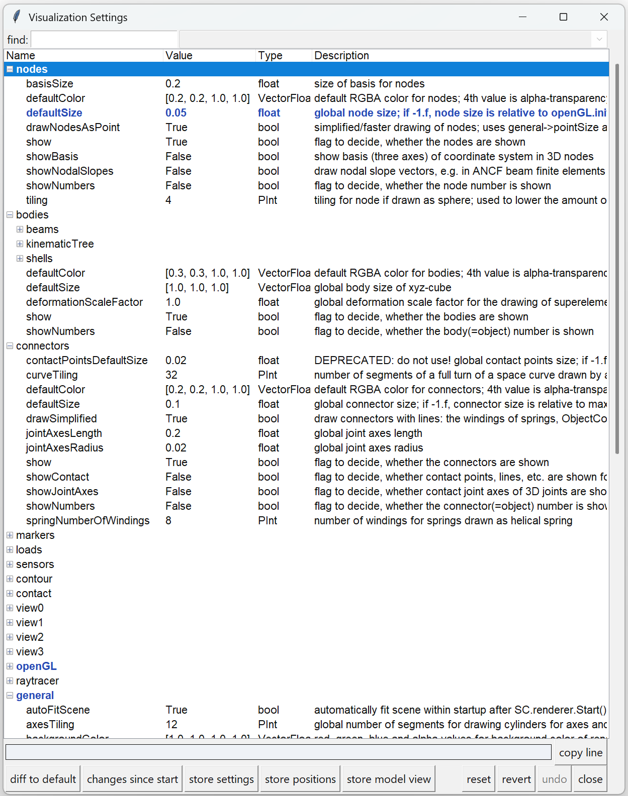
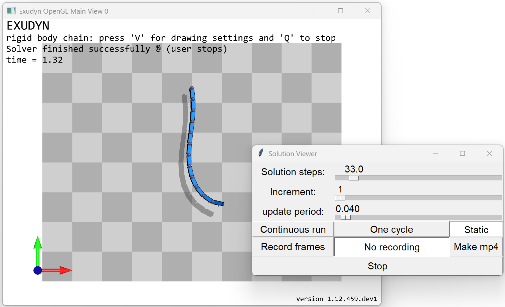

Renderer, graphics and visualization
Everything about what you see: the window the renderer opens, the view it shows, the
images and animations it can save, and how to draw your own geometry. The renderer draws
the visualization state of the MainSystem mbs into a 3D window, and more than 200
parameters control what it draws, see
Visualization settings dialog.
The renderer window
The window itself, and everything that is operated in it. For the raytracer, which draws the same model offline and at a higher quality, see Raytracing.
Renderer and 3D graphics
A 3D renderer is attached to the simulation. Visualization is started with SC.renderer.Start(), see the examples and tutorials.
In order to show your model in the render window, you have to provide 3D graphics data to the bodies. Flexible bodies (e.g., FFRF-like) can visualize their meshes. Further items (nodes, markers, …) can be visualized with default settings, however, often you have to turn on drawing or enlarge default sizes to make items visible. Item number can also be shown.
Finally, since version 1.6.188, sensor traces (trajectories) can be shown in the render window, see the VisualizationSettings in Visualization settings.
The renderer uses an OpenGL window of a library called GLFW, which is platform-independent. The renderer is set up in a minimalistic way, just to ensure that you can check that the modeling is correct.
Note:
For closing the render window, press key ‘Q’ or Escape or just close the window.
There is no way to contruct models inside the renderer (no ‘GUI’).
Try to avoid huge number of triangles in STL files or by creating large number of complex objects, such as spheres or cylinders.
After
visualizationSettings.general.reallyQuitTimeLimitseconds a ‘do you really want to quit’ dialog opens for safety on pressing ‘Q’; if no tkinter is available, you just have to press ‘Q’ twice. For closing the window, you need to click a second time on the close button of the window afterreallyQuitTimeLimitseconds (usually 900 seconds).
Here are the main features of the renderer, using keyboard and mouse, for details see Renderer, graphics and visualization:
press key H to show help in renderer
move model by pressing left mouse button and drag
rotate model by pressing right mouse button and drag
for further mouse functionality, see Mouse input
change visibility (wire frame, solid, transparent, …) by pressing T
zoom all: key A
open visualization dialog: key V, see Visualization settings dialog
open Python command dialog: key X, see Execute command and help
show item number: click on graphics element with left mouse button
show item dictionary: click on graphics element with right mouse button
for further keys, see Keyboard input or press H in renderer
raytracing mode, see Raytracing
Depending on your model (size, place, …), you may need to adjust the following general visualization and openGL parameters in visualizationSettings, see Visualization settings:
change window size
light and light position; switch
openGL.lightPositionsInCameraFrameto switch between model-fixed or camera-fixed lightsshadow (turned off by using shadow=0; turned on by using, e.g., a value of 0.3) and shadow polygon offset; shadow slows down graphics performance by a factor of 2-3, depending on your graphics card
visibility of nodes, markers, etc. in according bodies, nodes, markers, …,
visualizationSettingsmove camera with a selected marker: adjust
trackMarkerinvisualizationSettings.interactive
NOTE: changing visualizationSettings is not thread-safe, as it allows direct access to the C++ variables.
In most cases, this is not problematic, e.g., turning on/off some view parameters my just lead to some short-time artifacts if
they are changed during redraw. However, more advanced quantities (e.g., trackMarker or changing strings) may lead to problems,
which is why it is strongly recommended to:
set all
visualizationSettingsbefore start of renderer
Mouse input
The following table includes the mouse functions; it is generated from the one table of bindings in
exudyn.misc.keyBindings, which the help dialog of the render window shows as well:
Button |
action |
remarks |
|---|---|---|
left mouse button |
move model |
keep left mouse button pressed to move the model in the current x/y plane |
left mouse button |
select item |
mouse click on any node, object, etc. to see its basic information in the status line; selection is deactivated if mouse coordinates are shown (see F3) |
right mouse button |
rotate model |
keep right mouse button pressed to rotate the model around the current \(X_1\)/\(X_2\) axes |
right mouse button |
show item dictionary |
(short) press and release on an item; opens the edit dialog if it is activated in visualizationSettings |
mouse wheel |
zoom |
use the mouse wheel to zoom (on touch screens ‘pinch-to-zoom’ might work as well) |
Current mouse coordinates can be obtained via SystemContainer.renderer.GetMouseCoordinates().
6D mouse
Graphics engines, especially in CAD and finite elements allow input of special 3D or 6D mouse devices.
There is a basic interface for so-called 3D mouse / 6D mouse or space mouse, allowing to map the 6D joystick to translation and rotation,
see visualizationSettings.interactive.useJoystickInput and similar options.
The interface only works, if the device maps 6 coordinates to the joystick input of GLFW (tested with 3DCONNEXION mouse).
Keyboard input
The following table includes the keyboard shortcuts available in the window; it is generated from the same table as the help dialog, which opens with the key H:
Key(s) |
action |
remarks |
|---|---|---|
1,2,3,4 or 5 |
visualization update speed |
the entered digit controls the visualization update, ranging within 0.02, 0.1 (default), 0.5, 2, and 100 seconds |
CTRL+1 or SHIFT+CTRL+1 |
change view |
set view in the 1/2-plane (+SHIFT: viewed from the opposite side) |
CTRL+2 or SHIFT+CTRL+2 |
change view |
set view in the 1/3-plane (+SHIFT: viewed from the opposite side) |
CTRL+3 or SHIFT+CTRL+3 |
change view |
set view in the 2/3-plane (+SHIFT: viewed from the opposite side) |
CTRL+4 or SHIFT+CTRL+4 |
change view |
set view in the 2/1-plane (+SHIFT: viewed from the opposite side) |
CTRL+5 or SHIFT+CTRL+5 |
change view |
set view in the 3/1-plane (+SHIFT: viewed from the opposite side) |
CTRL+6 or SHIFT+CTRL+6 |
change view |
set view in the 3/2-plane (+SHIFT: viewed from the opposite side) |
CTRL+7 |
3D view |
set a 3D view of the model, rotated out of the coordinate planes |
A |
zoom all |
set the zoom such that the whole scene is visible |
‘.’ or KEYPAD + |
zoom in |
zoom one step into the scene (additionally press CTRL for a small zoom step) |
‘,’ or KEYPAD - |
zoom out |
zoom one step out of the scene (additionally press CTRL for a small zoom step) |
CURSOR UP, DOWN, … |
move scene |
use the cursor keys to move the scene up, down, left and right (use CTRL for small movements, SHIFT to rotate instead, ALT for the z-axis) |
KEYPAD 2/8, 4/6, 7/9 |
rotate scene |
rotate about the 1, 2 and 3-axis (use CTRL for small rotations) |
N |
show/hide nodes |
switches the visibility of nodes |
CTRL+N |
show/hide node numbers |
switches the visibility of node numbers |
B |
show/hide bodies |
switches the visibility of bodies |
CTRL+B |
show/hide body numbers |
switches the visibility of body numbers |
C |
show/hide connectors |
switches the visibility of connectors |
CTRL+C |
show/hide connector numbers |
switches the visibility of connector numbers |
M |
show/hide markers |
switches the visibility of markers |
CTRL+M |
show/hide marker numbers |
switches the visibility of marker numbers |
L |
show/hide loads |
switches the visibility of loads |
CTRL+L |
show/hide load numbers |
switches the visibility of load numbers |
S |
show/hide sensors |
switches the visibility of sensors |
CTRL+S |
show/hide sensor numbers |
switches the visibility of sensor numbers |
T |
faces / edges mode |
switch between faces transparent / faces transparent + edges / only face edges / full faces with edges / only faces visible |
O |
change center of rotation |
change the center of rotation to the current center of the window (affects only the current plane coordinates; rotate the model to adjust the other coordinates) |
R |
auto-rotate the view |
switch the automatic rotation of the model view on and off, see |
CTRL+R |
raytracing on/off |
switch raytracing on and off for the current view, see |
Q |
stop solver |
the current solver is stopped (and proceeds to the next simulation or to the end of the file); after |
SPACE |
pause/continue simulation |
pause the simulation, e.g. for model inspection; a paused simulation is continued by pressing space again; use SHIFT+SPACE to continuously activate ‘continue simulation’ |
ESCAPE |
close renderer |
stops the simulation (and further simulations) and closes the render window (same as closing the window); after |
X |
execute command |
open a dialog to enter a Python command (in the global Python scope), see Execute command and help; the dialog may appear behind the visualization window |
V |
visualization settings |
open a dialog to modify the visualization settings, see Visualization settings dialog; the dialog may appear behind the visualization window |
CTRL+V |
open a further view |
create the window of the next view that is configured but has no window yet |
H |
show help |
open the window that shows this list of mouse and keyboard commands |
F2 |
ignore keys |
switch the key input on and off; can be used together with a keyPressUserFunction to build simulators |
F3 |
show mouse coordinates |
shown in the status line |
CTRL+F3 |
show model view parameters |
shown in the status line: zoom, rotationVector (rot) and centerPoint (pos), as they are needed by |
Visualization settings dialog
Visualization settings are used for user interaction with the model. E.g., the nodes, markers, loads, etc., can be visualized for every model. There are default values, e.g., for the size of nodes, which may be inappropriate for your model. Therefore, you can adjust those parameters. In some cases, huge models require simpler graphics representation, in order not to slow down performance – e.g., the number of faces to represent a cylinder should be small if there are 10000s of cylinders drawn. Even computation performance can be slowed down, if visualization takes lots of CPU power. However, visualization is performed in a separate thread, which usually does not influence the computation exhaustively.
Details on visualization settings and its substructures are provided in Visualization settings. These settings may also be edited by pressing ‘V’ in the active render window (does not work, if there is no active render loop using, e.g., SC.renderer.DoIdleTasks() ).
python -m exudyn dialogs vis opens the same dialog with no model and no renderer, which is the way
to look a setting up while writing the script; see The command line: python -m exudyn.
The visualization settings dialog is shown exemplarily in Fig. 5.
Note that this dialog is automatically created and uses Python’s tkinter, which is lightweight, but not very well suited if display scalings are large (e.g., on high resolution laptop screens). If working with Spyder, it is recommended to restart Spyder, if display scaling is changed, in order to adjust scaling not only for Spyder but also for Exudyn.
Working in the dialog. A setting is edited in its cell: select the row and type, or pick
from the list where the value is a bool or one of the Exudyn enumeration types; RETURN or
leaving the field applies the value, ESCAPE keeps the old one, and a double click toggles a
bool. Hovering a row shows its description, its type and, for a vector or matrix setting, its
size. Every change is applied immediately.
The row at the bottom holds the line that sets the selected setting, ready to be pasted into a script, with a button that copies it:
SC.visualizationSettings.openGL.lineWidth = 2.0
A setting whose value differs from the Exudyn default is shown in colour, from the moment the dialog opens, so that a model’s own settings can be told from the rest. Four buttons act on that:
diff to default and changes since start open a window listing the differences as the code that makes them, and copy all of it at once — everything that differs from the defaults, and everything changed since the dialog was opened. A setting that
~/.exudyn/config.jsonalready stores is listed with the others and then named again under a comment saying so, because a stored setting is a difference to the default.store settings writes the settings that differ from the defaults into that file, so that every run starts with them — including the size and position of the render window, which are ordinary settings (
view*.window.renderWindowSizeandrenderWindowPosition).store positions writes the size and position of every window that is open, so that each opens where you left it: this dialog, the other interactive dialogs such as the
SolutionViewer, thePlotSensorwindows, and the render window - where it is, which becomesview0.window.renderWindowSizeandrenderWindowPositionin the file and in this dialog.
The visualization settings dialog has one more button, store model view: it shows the code that gives a script the current model view of the render window, as CTRL+F3 prints it,
SC.renderer.Start()
SC.renderer.SetModelView(zoom=2.386449,
rotationVector=[-0.7689536,0.05280677,0.2063775],
centerPoint=[0.04670653,0.02902222,0])
to paste into the script, so that every run starts with this view; it writes no file.
Both storing buttons show exactly what they will write, and ask, before anything is written; see
User settings that persist between runs. A geometry that is stored is used whenever a dialog opens, whatever
visualizationSettings.dialogs.storeDialogPositions says — that flag decides whether a dialog stores
itself when it closes.
To find a setting without knowing which folder it sits in, use the find field at the top or press CTRL+F: it searches the names first and the descriptions second, RETURN or F3 steps to the next hit, and the drop-down beside it lists the hits so that one can be picked.
The appearance of visualization settings dialogs may be adjusted by directly modifying exudyn.misc.GUI variables (this may change in the future). For example write in your code before opening the render window (treeEdit and treeview both mean the settings dialog currently used for visualization settings and partially for right-mouse-click):
import exudyn.misc.GUI
exudyn.misc.GUI.dialogDefaultWidth #unscaled width of, e.g., right-mouse-button dialog
exudyn.misc.GUI.treeEditDefaultWidth = 800
exudyn.misc.GUI.treeEditDefaultHeight = 600
exudyn.misc.GUI.treeEditMaxInitialHeight = 600 #otherwise height is increased for larger screens
exudyn.misc.GUI.treeEditOpenItems = ['general','contact'] #these tree items are opened when a dialog is opened the first time
exudyn.misc.GUI.treeEditLastOpenItems #which folders were open when a dialog was last used in this process; the next dialog opens with them (None until a dialog was used)
#
exudyn.misc.GUI.treeviewDefaultFontSize #this is the base font size of the dialog (also right-mouse-button dialog)
exudyn.misc.GUI.useRenderWindowDisplayScaling #if True, the scaling will follow the current scaling of the render window; if False, it will use the `tkinter` internal scaling, which uses the main screen where the dialog is created (which won't scale well, if the window is moved to another screen).
#
exudyn.misc.GUI.textHeightFactor = 1.45 #this factor is used to increase height of lines in tree view as compared to font size
python/Notebooks/snippets/visualization.ipynb


Fig. 5 View of visualization settings
Note: Press ‘V’ in render window to open dialog.
The visualization settings structure can be accessed in the system container SC (access per reference, no copying!), accessing every value or structure directly, e.g.,
SC.visualizationSettings.nodes.defaultSize = 0.001 #draw nodes very small
#change openGL parameters; current values can be obtained from SC.renderer.GetState()
#change zoom factor:
SC.visualizationSettings.openGL.advanced.initialZoom = 0.2
#set the center point of the scene (can be attached to moving object):
SC.visualizationSettings.openGL.advanced.initialCenterPoint = [0.192, -0.0039,-0.075]
#turn of auto-fit:
SC.visualizationSettings.general.autoFitScene = False
#change smoothness of a cylinder:
SC.visualizationSettings.general.cylinderTiling = 100
#make round objects flat:
SC.visualizationSettings.openGL.advanced.shadeModelSmooth = False
#turn on coloured plot, using y-component of displacements:
SC.visualizationSettings.contour.outputVariable = exu.OutputVariableType.Displacement
SC.visualizationSettings.contour.outputVariableComponent = 1 #0=x, 1=y, 2=z
python/Notebooks/snippets/visualization.ipynb
Execute command and help
In addition to the Visualization settings dialog, a simple help window opens upon pressing key ‘H’.
It is also possible to execute single Python commands during simulation by pressing ‘X’, which opens a dialog, saying ‘Exudyn Command Window’.
Note that the dialog may appear behind the visualization window!
This dialog may be very helpful in long running computations or in case that you may evaluate variables for debugging.
The Python commands are evaluated in the global python scope, meaning that mbs or other variables of your scripts are available.
User errors are caught by exceptions, but in severe cases this may lead to crash.
To print values, always use print(...) to see the string representation of an object.
Useful examples (single lines) may be:
x=5 #or change any other variable used in Python user functions
print(mbs) #print current mbs overview
print(mbs.GetSensorValues(0))
#adjust simulation end time, in long-run simulations:
mbs.sys['dynamicSolver'].it.endTime = 1
#adjust output behavior
mbs.sys['dynamicSolver'].output.verboseMode = 0
<systemData:
Number of nodes= 1
Number of objects = 3
Number of markers = 3
Number of loads = 0
Number of sensors = 1
Number of ODE2 coordinates = 3
Number of ODE1 coordinates = 0
Number of AE coordinates = 0
Number of data coordinates = 0
For details see mbs.systemData, mbs.sys and mbs.variables
>
[0.56467641 0.84272909 0. ]
python/Notebooks/snippets/visualization.ipynb
You can also do quite fancy things during simulation, e.g., to deactivate joints (of course this may result in strange behavior):
n=mbs.systemData.NumberOfObjects()
for i in range(n):
d = mbs.GetObject(i)
#if 'Joint' in d['objectType']:
if 'activeConnector' in d:
mbs.SetObjectParameter(i, 'activeConnector', False)
python/Notebooks/snippets/visualization.ipynb
Note that you could also change visualizationSettings in this way, but the Visualization settings dialog is much more convenient.
Changing simulationSettings within the execute command is dangerous and must be treated with care.
Some parameters, such as simulationSettings.timeIntegration.endTime are copied into the internal solver’s mbs.sys['dynamicSolver'].it structure.
Thus, changing simulationSettings.timeIntegration.endTime has no effect during simulation.
As a rule of thumb, all variables that are not stored inside the solvers structures may be adjusted by the simulationSettings passed to the solver (which are then not copied internally); see the C++ code for details. However, behavior may change in future and unexpected behavior or and changing simulationSettings will likely cause crashes if you do not know exactly the behavior, e.g., changing output format from text to binary … !
Specifically, newton and discontinuous settings cannot be changed on the fly as they are copied internally.
The model view
What the camera looks at, how a view is kept, and how it can be made to follow the model.
Render state
The system container function SC.renderer.GetState() returns a dictionary with current information on the renderer.
This information is updated whenever the renderer performs redrawing or when according changes in the renderer are performed.
After SC.renderer.Start(), SC.renderer.GetState() returns a dictionary such as this one - here of a renderer that
opened no window:
SC.renderer.Start()
renderState = SC.renderer.GetState()
for (key, value) in renderState.items():
print(key, '=', value.tolist() if isinstance(value, np.ndarray) else value)
viewEnabled = True
windowOpen = False
centerPoint = [0.0, 0.0, 0.0]
rotationCenterPoint = [0.0, 0.0, 0.0]
maxSceneSize = 1.0
zoom = 1.0
boundingBox = [array([-1., -1., -1.]), array([1., 1., 1.])]
currentWindowSize = [1024, 768]
currentWindowPosition = [-1, -1]
displayScaling = 1.0
modelRotation = [[1.0, 0.0, 0.0], [0.0, 1.0, 0.0], [0.0, 0.0, 1.0]]
projectionMatrix = [[1.0, 0.0, 0.0, 0.0], [0.0, 1.0, 0.0, 0.0], [0.0, 0.0, 1.0, 0.0], [0.0, 0.0, 0.0, 1.0]]
mouseCoordinates = [0.0, 0.0]
openGLcoordinates = [0.0, 0.0]
mouseSelectionMbsNumber = 0
mouseSelectionItemType = ItemType._None
mouseSelectionItemID = 0
mouseSelectionZdepth = 0.0
joystickPosition = [0.0, 0.0, 0.0]
joystickRotation = [0.0, 0.0, 0.0]
joystickAvailable = -1
python/Notebooks/snippets/visualization.ipynb
Most entries in renderState are having single precision due to compatibility with values entered in OpenGL.
The most typical scenario for using SC.renderer.SetState(...) is to restore a previous view or to start a simulation with a specific view, projection or similar. For exactly that case there is SC.renderer.RestoreSavedState(), which reads the state that SC.renderer.Stop() saved in exu.sys and returns False if there is none yet. Furthermore, mouse and joystick values can be used for interactive models.
Note that a simpler way to restore the model view is based on pressing CTRL-F3, to obtain the current model view values, see Storing the model view.
There is a set of variables, which can be actively changed by calling SC.renderer.SetState(renderState) with renderState
containing a modified dictionary:
centerPoint: this is a 3D vector (list/numpy-array) containing the center point for the current view; modifying this vector allows to track objects in you simulation, however, it is highly recommended to usetrackMarkerinvisualizationSettings.interactivefor tracking of objects!rotationCenterPoint: the centerpoint for rotation with mouse (pressing right button)maxSceneSize: this value is used in the 3D view, clipping objects nearer or farer than this size; also used for perspective view; computed automatically based on the modelzoom: this factor changes the zoom for the renderer, in fact for the size of the view; this leads to smaller objects with larger zoom valuesboundingBox: a list of two vectorspMinandpMax, representing the bounding box of the current view (rotated into the screen plane); thus,pMax[0]-pMin[0]is the width of the scene,pMax[0]-pMin[0]is the height of the scene, andpMax[2]-pMin[2]is the depth of the scene; this value cannot be set withSC.renderer.SetState(...)modelRotation: this is the \(3 \times 3\) rotation matrix used for model rotation; changing this matrix allows to rotate the model in the view; overwriting modelRotation, centerPoint and zoom with stored values allows to reset to a certain (default) viewprojectionMatrix: the \(4 \times 4\) matrix for camera projection (as a homogeneous transformation, according to classical OpenGL standard)
Note that other items in renderState are ignored when calling SC.renderer.SetState(renderState). The read only variables in SC.renderer.GetState() are:
currentWindowSize: contains current window size, which is different from default values in visualizationSettings, if window is scaled by usercurrentWindowPosition: the top left corner of the render window, as the window manager reports it — the OpenGL area, not the title bar. It follows the window while it is open, and setting it throughSC.renderer.SetState(...)also setsview*.window.renderWindowPosition, ascurrentWindowSizedoes for the sizedisplayScaling\(^*\): contains display scaling (monitor scaling; content scaling) as returned by GLFW and Windows (always 1 on Linux); used internally in renderer to scale fontsmouseCoordinates\(^*\): returns 2D vector of current mouse coordinates on screenopenGLcoordinates\(^*\): returns 3D vector of current mouse coordinatesjoystickAvailable\(^*\): set True, if a special 6D mouse is available (only works for special hardware, e.g., 3Dconnexion space mouse)joystickPosition\(^*\): contains current joystick position vector informationjoystickRotation\(^*\): contains current joystick rotation vector information (linearized rotation angles)
\(^*\)Note that values with an asterisk are only available if the renderer has already been started using SC.renderer.Start().
Storing the model view
The simplest way to store the model view is to press CTRL-F3 when the renderer is running, to get the code for setting the model view printed to the console, e.g.,
(on macOS, CTRL+F3 is a shortcut of the system, Move focus to the Dock, and does not reach the renderer; use the
button store model view of the visualization settings dialog, key V, or switch the shortcut off in the system
settings, Keyboard - Keyboard Shortcuts - Keyboard):
Set current view: SC.renderer.SetModelView(zoom=8.8,rotationVector=[-0.8120557,0.4727261,0.7176849],centerPoint=[1.562,-1.526,0])
Then, just copy the code after SC.renderer.Start, see the following code snippet:
SC.visualizationSettings.general.autoFitScene = False #prevent from autozoom
SC.renderer.Start()
SC.renderer.SetModelView(zoom=8.8,rotationVector=[-0.8120557,0.4727261,0.7176849],centerPoint=[1.562,-1.526,0])
#+++++++++++++++
#do simulation here
#+++++++++++++++
SC.renderer.Stop()
python/Notebooks/snippets/visualization.ipynb
If you are using an interactive Python, there is a automated way to store and restore the current view (zoom, centerpoint, orientation, etc.) by using SC.renderer.GetState() and SC.renderer.SetState(),
see also Render state.
A simple way is to reload the stored render state (model view) after simulating your model once at the end of the simulation (note that visualizationSettings.general.autoFitScene should be set False if you want to use the stored zoom factor):
SC.visualizationSettings.general.autoFitScene = False #prevent from autozoom
SC.renderer.Start()
SC.renderer.RestoreSavedState() #the view of the previous run, if there is one
#+++++++++++++++
#do simulation here and adjust model view settings with mouse
#+++++++++++++++
#store model view for next run:
SC.renderer.Stop() #stores render state in exu.sys['renderState']
python/Notebooks/snippets/visualization.ipynb
Whenever SC.renderer.Start() is called, the renderState is reset (because it is assumed that the model has been changed and the previous view is invalid). However, you always can store and restore the renderstate manually.
Since version 1.10.98, the ZoomAll and SetModelView also work without starting the renderer (using only the raytracer). However, note that ZoomAll and SetModelView have to be called before the raytracer call RedrawAndGetImage(True) or after renderer.Start() using regular OpenGL.
If you wish to include all details of your view, like to rotation, you can obtain the current model view from the console after a simulation, e.g.,
In[1] : SC.renderer.GetState()
Out[1]:
{'centerPoint': [1.0, 0.0, 0.0],
'maxSceneSize': 2.0,
'zoom': 1.0,
'currentWindowSize': [1024, 768],
'modelRotation': [[ 0.34202015, 0. , 0.9396926 ],
[-0.60402274, 0.76604444, 0.21984631],
[-0.7198463 , -0.6427876 , 0.26200265]])}
which contains the last state of the renderer (NOTE: here, only part of the render state is shown for simplicity!).
Now copy the output and set this with SC.renderer.SetState in your Python code to have a fixed model view in every simulation (SC.renderer.SetState AFTER SC.renderer.Start()):
SC.visualizationSettings.general.autoFitScene = False #prevent from autozoom
SC.renderer.Start()
renderState={'centerPoint': [1.0, 0.0, 0.0],
'maxSceneSize': 2.0,
'zoom': 1.0,
'modelRotation': [[ 0.34202015, 0. , 0.9396926 ],
[-0.60402274, 0.76604444, 0.21984631],
[-0.7198463 , -0.6427876 , 0.26200265]]}
SC.renderer.SetState(renderState)
#.... further code for simulation here
SC.renderer.Stop()
python/Notebooks/snippets/visualization.ipynb
Note that in the current version of Exudyn there is more data stored in render state, which is not used in SC.renderer.SetState,
see also Render state.
Camera following objects and interacting with model view
For some models, it may be advantageous to track the translation and/or rotation of certain bodies, e.g., for cars, (wheeled) robots or bicycles. Since Exudyn 1.4.18 you can attach view to a marker, using the visualization setting
SC.visualizationSettings.view0.camera.trackMarker = nMarker
python/Notebooks/snippets/visualization.ipynb
in which nMarker represents the desired marker number to follow.
See also related options in SC.visualizationSettings.interactive in VSettingsInteractive.
The following paragraph represents a slower, slightly outdated approach, which may be interesting for advanced usage of object tracking.
To do so, the current render state (SC.renderer.GetState(), SC.renderer.SetState(...)) can be obtained and modified, in order to always follow a certain position.
As this needs to be done during redraw of every frame, it is conveniently done in a graphicsUserFunction, e.g., within the ground body. This is shown in the following example, in which mbs.variables['nTrackNode'] is a node number to be tracked:
#mbs.variables['nTrackNode'] contains node number
def UFgraphics(mbs, objectNum):
n = mbs.variables['nTrackNode']
p = mbs.GetNodeOutput(n,exu.OutputVariableType.Position,
configuration=exu.ConfigurationType.Visualization)
rs=SC.renderer.GetState() #get current render state
A = np.array(rs['modelRotation'])
p = A.T @ p #transform point into model view coordinates
rs['centerPoint']=[p[0],p[1],p[2]]
SC.renderer.SetState(rs) #modify render state
return []
#add object with graphics user function
oGround2 = mbs.AddObject(ObjectGround(visualization=
VObjectGround(graphicsDataUserFunction=UFgraphics)))
#.... further code for simulation here
python/Notebooks/snippets/visualization.ipynb
NOTE that this approach is slower and it may lead to a (usually silient) crash after closing the renderer, as the renderer thread is somehow coupled to Python which is prohibited from Python side.
Images, animations and the solution viewer
Looking at a solution after it was computed, and taking pictures of it.
Solution viewer
Exudyn offers a convenient WYSIWYS – ‘What you See is What you Simulate’ interface, showing you the computation results during simulation in the render window. If you are running large models, it may be more convenient to watch results after simulation has been finished. For this, you can use
interactive.SolutionViewer, see Function: SolutionViewerinteractive.AnimateModes, lets you view the animation of computed modes, see Function: AnimateModes
shown exemplary in Fig. 6.


Fig. 6 View of SolutionViewer (as of Exudyn 1.5.42.dev1)
The SolutionViewer adds a tkinter interactive dialog, which lets you interact with the model, with the following features:
The SolutionViewer represents a ‘Player’ for the dynamic solution or a series of static solutions, which is available after simulation if
solution.file.write = TrueThe parameter
solution.file.writePeriodrepresents the time period used to store solutions during dynamic computations.As soon as ‘Run’ is pressed, the player runs (and it may be started automatically as well)
In the ‘Static’ mode, drag the slider ‘Solution steps’ to view the solution steps
In the ‘Continuous run’ mode, the player runs in an infinite loop
In the ‘One cycle’ mode, the player runs from the current position to the end; this is perfectly suited to record series of images for creating animations, see Storing images and generating animations and works together with the visualization settings dialog.
In the ‘Record animation’ mode, the player records frames that are shown in the render window; before pressing on ‘Record animation’, press ‘Stop’ and switch to ‘One cycle’. Then put the solution steps slider to the first frame and press ‘Record animation’, which stores images in the current subfolder ‘images’ as ‘frame00001.png’ with increasing number, using PNG by default. The number is increased and can only be reset after new start of SolutionViewer.
The button ‘Make mp4’ allows to directly generate animation files, see next section.
The sliders follow the width of the window.
SolutionViewer(..., windowSize=[width, height])gives the window a size; otherwise it opens at the size stored for it in~/.exudyn/config.json- by store positions of the settings dialog, or when it closes whilevisualizationSettings.dialogs.storeDialogPositionsis on.
The solution should be loaded with
LoadSolutionFile('solution/coordinatesSolution.txt'), where ‘solution/coordinatesSolution.txt’ is the default solution file,
see
exu.SimulationSettings().solution.file.name
By default and as a recommended way, if no solution is provided, SolutionViewer reloads the solution of the
previous simulation that is referred to from mbs.sys['simulationSettings']. The solution of an earlier run - belonging
to the same mbs - is loaded with LoadSolutionFile, in the model or at the command line / IPython:
#... mbs has been previously solved
mbs.SolutionViewer()
#a solution file of an earlier run; OutputFilePath gives where the solver wrote it,
#also if exudyn.config.outputDirectory is set
from exudyn.utilities import LoadSolutionFile, OutputFilePath
sol = LoadSolutionFile(OutputFilePath('solution/coordinatesSolution.txt'))
mbs.SolutionViewer(solution=sol)
columns imported = [3, 3, 3, 0, 0, 0, 0]
total columns to be imported = 9 , array size of file = 10
python/Notebooks/snippets/visualization.ipynb
An example for the SolutionViewer is integrated into the Examples/ directory, see solutionViewerTest.py.
Storing images and generating animations
In many dynamics simulations, it is very helpful to create animations in order to better understand the motion of bodies. Specifically, the animation can be used to visualize the model much slower or faster than the model is computed.
Images can be stored conveniently either in the way shown below for series of images, or using the SolutionViewer, Solution viewer. For single images, you can use
SC.renderer.RedrawAndGetImage()
to obtain single images at dedicated time instants. If the renderer is active, you directly get a snapshot of the current view.
Software rendering
Setting the flag useRaytracer=True in RedrawAndGetImage, the software raytracer will be used – see Raytracing for more details.
If the renderer has not yet been started, you ONLY can use the raytracer for image retrieval, however, you should use renderer.ZoomAll and renderer.SetModelView to adjust the view previously.
However, the pure raytracer capability allows to retrieve images without opening the render window, which may be annoying in automated image retrieval or on HPC environments where openGL may not be available.
Retrieved images can be conveniently used with matplotlib for further manipulation or storing, also see examples:
import matplotlib.pyplot as plt
#zoom all or set model view first!
#...
image=SC.renderer.RedrawAndGetImage()
plt.imsave("testImage.jpg", image)
plt.imshow(image)
plt.axis('off')
plt.show()
Generating animations
Animations are created based on a series of images (frames, snapshots) taken during simulation. It is important, that the current view is used to record these images – this means that the view should not be changed during the recording of images. The easiest way to create animations, is using the SolutionViewer with its integrated features, see Solution viewer.
To turn on recording of images during solving, set the following flag to a positive value
simulationSettings.solution.recordImagesInterval = 0.01
which means, that after every 0.01 seconds of simulation time, an image of the current view is taken and stored in the directory and filename (without filename ending) specified by
SC.visualizationSettings.exportImages.saveImageFileName = "myFolder/frame"
By default, a consecutive numbering is generated for the image, e.g., ‘frame0000.png, frame0001.png,…’. Note that the standard file format PNG with ending ‘.png’ uses compression libraries included in glfw, while the alternative TGA format produces ‘.tga’ files which contain raw image data and therefore can become very large.
To create animation files, an external tool FFMPEG is used to efficiently convert a series of images into an animation. Since Exudyn V1.9.83, ffmpeg is integrated into the solution viewer (button ‘Make mp4’) and into exudyn.interactive.ConvertImages2Video, which require the Python package ffmpeg-python and the program ffmpeg itself:
conda install ffmpeg #the program ffmpeg, into the active conda environment
pip install ffmpeg-python #the Python package that calls it
This works on Windows, Linux and macOS (checked on all three), needs no Homebrew on macOS, and the program is
then found from the terminal of that environment. Without conda, the program comes from the package manager of the
system (e.g. apt install ffmpeg, with sudo, or Homebrew on macOS) and the Python package from pip as above.
macOS: an ffmpeg without the
libx264encoder (as the one of conda-forge on macOS) makesConvertImages2Videotake the encoder of macOS,h264_videotoolbox, and say so. From the command line, in the folder of the images:ffmpeg -i frame%05d.png -c:v h264_videotoolbox -b:v 8M animation.mp4
The images are written to exportImages.saveImageFileName (default images/frame), relative to the current
directory of Python - in a terminal the directory the script was started from - or to
exudyn.config.outputDirectory if that is set.
See the GUI chapter for the visualization settings that
control image export.
How to add graphics
Drawing geometry of your own. The dictionary format the drawing functions take is described in GraphicsData.
Graphics user functions via Python
There are some user functions in order to customize drawing:
You can assign graphicsData to the visualization to most bodies, such as rigid bodies in order to change the shape. Graphics can also be imported from files (
exu.graphics.FromSTLfileASCII,exu.graphics.FromSTLfile, ) using the established format STL (STereoLithography or Standard Triangle Language; file format available in nearly all CAD systems).Some objects, e.g.,
ObjectGenericODE2orObjectRigidBody, provide customized a functiongraphicsDataUserFunction. This user function just returns a list of GraphicsData, see GraphicsData. With this function you can change the shape of the body in every step of the computation.Specifically, the
graphicsDataUserFunctioninObjectGroundcan be used to draw any moving background in the scene.
Note that all kinds of graphicsDataUserFunctions need to be called from the main (=computation) process as Python functions may not be called from separate threads (GIL). Therefore, the computation thread is interrupted to execute the graphicsDataUserFunction between two time steps, such that the graphics Python user function can be executed. There is a timeout variable for this interruption of the computation with a warning if scenes get too complicated.
Color, RGBA and alpha-transparency
Many functions and objects include color information. In order to allow alpha-transparency, all colors contain a list of 4 RGBA values, all values being in the range [0..1]:
red (R) channel
green (G) channel
blue (B) channel
alpha (A) value, representing the so-called alpha-transparency (A=0: fully transparent, A=1: solid)
E.g., red color with no transparency is obtained by the color=[1,0,0,1].
Color predefinitions are found in graphics.py, e.g., using graphics.color.red or graphics.color.steelblue as well a list of 16 colors graphics.colorList, which is convenient to be used in a loop creating objects.
The names color4red, color4steelblue, …, color4list of exudyn.graphicsDataUtilities are deprecated; they are the same values.
Character encoding: UTF-8
Character encoding is a major issue in computer systems, as different languages need a huge amount of different characters, see the amusing blog of Joel Spolsky: The Absolute Minimum Every Software Developer Absolutely, Positively Must Know About Unicode … More about encoding can be found in Wikipedia:UTF-8. UTF-8 encoding tables can be found within the wikipedia article and a comparison with the first 256 characters of unicode is provided at UTF-8 char table.
For short, Exudyn uses UTF-8 character encoding in texts / strings drawn in OpenGL renderer window.
However, the set of available UTF-8 characters in Exudyn is restricted to a very small set of characters (as compared to available characters in UTF-8).
For an example of available UTF-8 characters, see examples/solutionViewerTest.py.
Greek characters include all lower case characters (including variations) and only upper case characters, which are different from latin characters: \(\alpha, \beta, \gamma, ... \sigma, \varphi, \varepsilon; \Gamma, \Delta, \Theta, \Lambda, \Xi, \Pi, \Sigma, \Phi, \Psi, \Omega\).